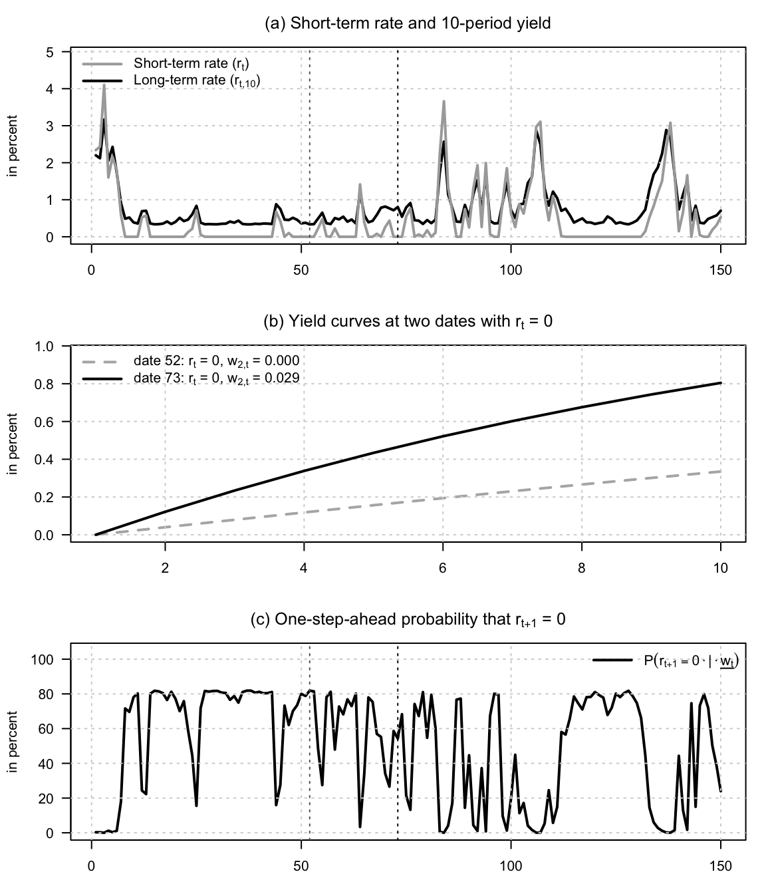
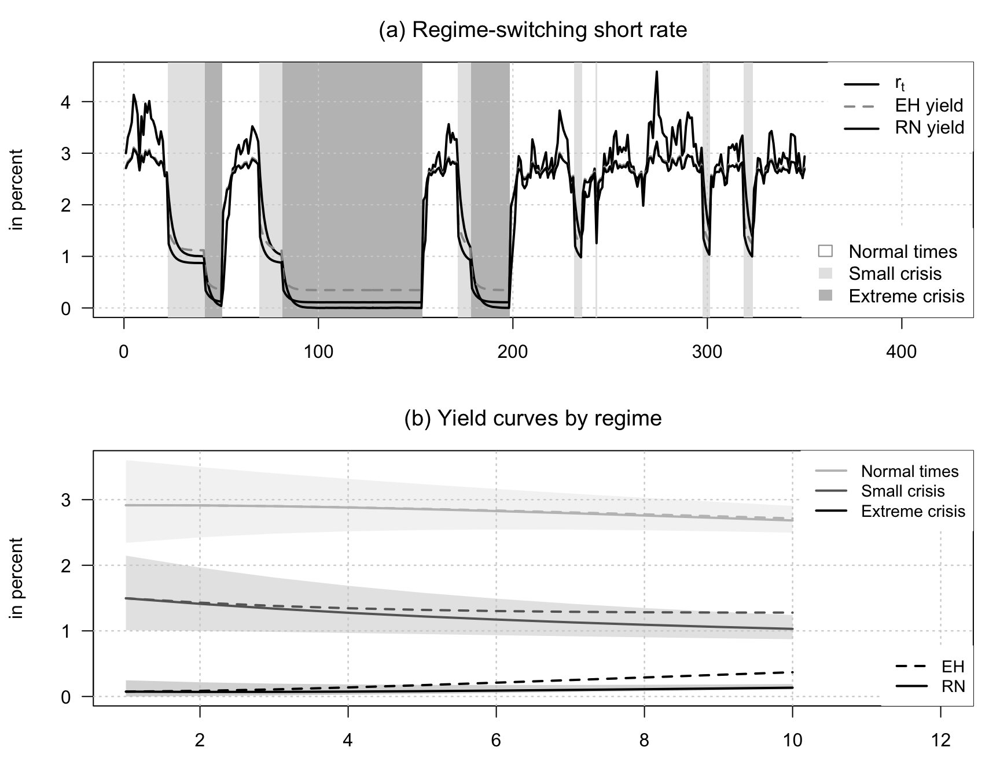

Chapter 4 Non-Gaussian affine term structure models
4.1 A VARG term-structure model can generate movements
This example illustrates how a VARG term-structure model can generate movements in long-term yields even when the short-term rate is stuck at zero. We consider a two-factor specification in which the first factor is the short-term rate, \(r_t = w_{1,t}\), with \(\nu_1 = 0\), while the second factor is a persistent nonnegative factor that Granger-causes the first one through a positive \(\beta_{1,2}\) coefficient. As a result, two dates may feature the same current short-term rate \(r_t = 0\), but different values of \(w_{2,t}\), and hence different yield curves because expected future short rates differ.
# Purpose: This example illustrates how a VARG term-structure model can generate movements
library(DTAM)
set.seed(123)
TT <- 150
H <- 10
# Two-factor VARG:
# - factor 1 is the short-term rate r_t = w_{1,t} and has nu_1 = 0,
# so its conditional distribution admits a Dirac mass at zero;
# - factor 2 is persistent and causes factor 1.
model <- list(
alpha = matrix(c(0.20, 0.05), ncol = 1),
nu = matrix(c(0, 0.5), ncol = 1),
mu = matrix(c(0.004, 0.0025), ncol = 1),
beta = matrix(c(225, 14,
0, 380), 2, 2, byrow = TRUE),
alpha_w = matrix(c(0, 0), ncol = 1),
n_w = 2
)
# In particular, beta_11 * mu_1 = 0.9, so the short-term rate is highly persistent.
xi0 <- 0
xi1 <- matrix(c(1, 0), ncol = 1)
# Risk-neutral dynamics and affine bond-pricing coefficients.
modelQ <- make_VARG_Q(model)
AB <- compute_AB_classical(
xi0 = xi0,
xi1 = xi1,
H = H,
psi = psi_VARG,
psi.parameterization = modelQ
)
# Simulate the physical dynamics from the unconditional mean.
w0 <- c(compute_uncondmean_VARG(model))
simX <- t(simul_VARG(model, nb_periods = TT - 1, w0 = w0))
# Compute the whole yield curve at each date.
yields <- matrix(1, TT, 1) %*% matrix(AB$b, nrow = 1) +
simX %*% matrix(AB$a, dim(AB$a)[1], dim(AB$a)[3])
# One-step-ahead probability that the short-term rate stays at zero.
p_stay_zero <- exp(-(model$alpha[1] + simX %*% matrix(model$beta[1, ], ncol = 1)))
# Select two dates such that r_t = 0 but w_{2,t} differs sharply.
idx_zero <- which(simX[, 1] < 1e-12)
stopifnot(length(idx_zero) >= 2)
i_low <- idx_zero[which.min(simX[idx_zero, 2])]
i_high <- idx_zero[which.max(simX[idx_zero, 2])]
par(mfrow = c(3, 1), mar = c(3.2, 4.2, 2.8, 1.2))
# Panel (a): short rate and long yield through time.
plot(
1:TT, 100 * yields[, H],
type = "l", lwd = 2, col = "black", las = 1,
xlab = "time", ylab = "in percent",
ylim = 120 * range(c(simX[, 1], yields[, H])),
main = expression(paste("(a) Short-term rate and 10-period yield"))
)
grid()
lines(1:TT, 100 * simX[, 1], col = "darkgrey", lwd = 2)
abline(v = i_low, col = "grey40", lty = 3)
abline(v = i_high, col = "black", lty = 3)
legend(
"topleft",
legend = c(
expression(paste("Short-term rate (",r[t],")",sep="")),
expression(paste("Long-term rate (",r[t*","*10],")",sep=""))
),
col = c("darkgrey", "black"),
lwd = c(2, 2),
lty = c(1, 1),
seg.len = 3,
bty = "n"
)
# Panel (b): yield curves at two dates with the same current short rate r_t = 0.
plot(
1:H, 100 * yields[i_low, ],
type = "l", lwd = 2, col = "grey70", las = 1, lty = 2,
xlab = "maturity", ylab = "in percent",
ylim = 120 * range(yields[c(i_low, i_high), ]),
main = expression(paste("(b) Yield curves at two dates with ",r[t]," = 0",sep=""))
)
grid()
lines(1:H, 100 * yields[i_high, ], lwd = 2, col = "black")
legend(
"topleft",
legend = c(
bquote(paste("date ", .(i_low), ": ", r[t], " = 0, ",
w[2*","*t], " = ",
.(format(round(simX[i_low, 2], 3), nsmall = 3)))),
bquote(paste("date ", .(i_high), ": ", r[t], " = 0, ",
w[2*","*t], " = ",
.(format(round(simX[i_high, 2], 3), nsmall = 3))))
),
col = c("grey70", "black"),
lwd = c(2, 2),
lty = c(2, 1),
seg.len = 3,
cex = 1.0,
bty = "n"
)
# Panel (c): one-step-ahead probability that the short rate remains at zero.
plot(
1:TT, 100 * c(p_stay_zero),
type = "l", lwd = 2, col = "black", las = 1,
xlab = "time", ylab = "in percent",
ylim = c(0, 105),
main = expression(paste("(c) One-step-ahead probability that ",r[t+1]," = 0"))
)
grid()
abline(v = i_low, col = "grey40", lty = 3)
abline(v = i_high, col = "black", lty = 3)
legend(
"topright",
legend = c(expression(P(r[t+1] == 0 %.% "|" %.% underline(w[t])))),
col = "black",
lwd = 2,
lty = 1,
seg.len = 3,
bty = "n"
)
Panel (a) shows that the 10-period yield keeps moving while the short-term rate repeatedly returns to zero. Panel (b) makes the mechanism transparent: two dates may share the same current short-term rate \(r_t = 0\), yet display markedly different yield curves because the second factor changes the expected future path of short-term rates. Panel (c) reports the one-step-ahead probability that the short-term rate remains at zero; this probability is high when the second factor is low and falls when the second factor signals a return of positive short-term rates.
4.2 A three-regime Gaussian regime-switching short-rate
This example illustrates a three-regime Gaussian regime-switching short-rate model. The regimes are interpreted as normal times, small crises, and extreme crises. In the extreme-crisis regime, the mean-reversion level of the short rate is zero, capturing the idea that the central bank pushes the short rate toward the lower bound. We then add priced regime risk by tilting risk-neutral transition probabilities toward the extreme-crisis regime.
# Purpose: This example illustrates a three-regime Gaussian regime-switching short-rate
library(DTAM)
# set.seed(123)
TT <- 350
H <- 10
rho <- 0.7
# Regime-specific long-run means of the short rate.
mu_bar <- c(0.03, 0.01, 0.00)
mu <- matrix((1 - rho) * mu_bar, 1, 3)
# Regime-specific volatilities.
sigma <- c(0.003, 0.00001, 0.00001)
# Regime-transition matrix under the physical measure.
Pi <- matrix(c(
0.95, 0.05, 0.00,
0.05, 0.90, 0.05,
0.05, 0.00, 0.95
), 3, 3, byrow = TRUE)
# Regime-risk prices: the SDF is high in the extreme-crisis regime.
gamma <- c(0, 0, 1.25)
Pi_star <- sweep(Pi, 2, exp(gamma), `*`)
Pi_star <- Pi_star / rowSums(Pi_star)
regime_names <- c("Normal times", "Small crisis", "Extreme crisis")
model_P <- list(
Phi = matrix(rho, 1, 1),
Pi = Pi,
mu = mu,
Sigma = array(sigma^2, c(1, 1, 3))
)
model_Q <- model_P
model_Q$Pi <- Pi_star
xi0 <- 0
xi1 <- matrix(c(1, rep(0, 3)), ncol = 1)
AB_P <- compute_AB_classical(
xi0 = xi0,
xi1 = xi1,
H = H,
psi = psi_RSVAR,
psi.parameterization = model_P
)
AB_Q <- compute_AB_classical(
xi0 = xi0,
xi1 = xi1,
H = H,
psi = psi_RSVAR,
psi.parameterization = model_Q
)
# Simulate regimes and short rates under the physical dynamics.
sim <- simul_RSVAR(model_P, nb.sim = TT, y0 = mu_bar[1], z0 = 1)
r <- matrix(sim$y[, 1], TT, 1)
z <- sim$z
regime <- sim$regime
W <- sim$w
yields_P <- matrix(1, TT, 1) %*% matrix(AB_P$b, nrow = 1) +
W %*% matrix(AB_P$a, dim(AB_P$a)[1], dim(AB_P$a)[3])
yields_Q <- matrix(1, TT, 1) %*% matrix(AB_Q$b, nrow = 1) +
W %*% matrix(AB_Q$a, dim(AB_Q$a)[1], dim(AB_Q$a)[3])
par(mfrow = c(2, 1), mar = c(3.2, 4.2, 2.8, 1.2))
add_regime_shading <- function(regime, col_regime) {
rr <- rle(regime)
end <- cumsum(rr$lengths)
start <- c(1, head(end, -1) + 1)
usr <- par("usr")
for (i in seq_along(rr$values)) {
col_i <- col_regime[rr$values[i]]
if (!is.na(col_i)) {
rect(start[i] - 0.5, usr[3], end[i] + 0.5, usr[4],
col = col_i, border = NA)
}
}
}
plot(
1:TT, 100 * r,
type = "n", lwd = 2, las = 1, col = "black",
xlab = "time", ylab = "in percent",
ylim = 100 * range(c(r, yields_P[, H], yields_Q[, H])),
xlim=c(1,TT*(1.2)),
main = expression(paste("(a) Regime-switching short rate"))
)
add_regime_shading(regime, c(NA, "grey90", "grey75"))
grid()
lines(1:TT, 100 * r, col = "black", lwd = 2)
lines(1:TT, 100 * yields_P[, H], col = "grey60", lwd = 2, lty = 2)
lines(1:TT, 100 * yields_Q[, H], col = "black", lwd = 2)
legend(
"topright",
legend = c(expression(r[t]), "EH yield", "RN yield"),
col = c("black", "grey60", "black"),
lty = c(1, 2, 1),
lwd = 2,
bg = "white",
box.col = "white",
bty = "o"
)
legend(
"bottomright",
legend = regime_names,
fill = c("white", "grey90", "grey75"),
border = c("grey60", NA, NA),
bg = "white",
box.col = "white",
bty = "o"
)
curve_cols <- c("grey75", "grey40", "black")
band_cols <- grDevices::adjustcolor(curve_cols, alpha.f = 0.18)
regime_curve_summary <- lapply(1:3, function(j) {
y_q <- yields_Q[regime == j, , drop = FALSE]
y_p <- yields_P[regime == j, , drop = FALSE]
list(
mean_Q = apply(y_q, 2, mean),
mean_P = apply(y_p, 2, mean),
q10_Q = apply(y_q, 2, quantile, probs = 0.10),
q90_Q = apply(y_q, 2, quantile, probs = 0.90)
)
})
plot(
1:H, 100 * regime_curve_summary[[1]]$mean_Q,
type = "n", lwd = 2, las = 1, col = "grey75",
xlab = "maturity", ylab = "in percent",
ylim = 100 * range(unlist(lapply(
regime_curve_summary,
function(x) c(x$q10_Q, x$q90_Q, x$mean_P)
))),
xlim=c(1,H*(1.2)),
main = expression(paste("(b) Yield curves by regime"))
)
grid()
for (j in 1:3) {
polygon(
c(1:H, H:1),
100 * c(regime_curve_summary[[j]]$q10_Q, rev(regime_curve_summary[[j]]$q90_Q)),
col = band_cols[j],
border = NA
)
}
grid()
for (j in 1:3) {
lines(1:H, 100 * regime_curve_summary[[j]]$mean_P,
col = curve_cols[j], lwd = 2, lty = 2)
lines(1:H, 100 * regime_curve_summary[[j]]$mean_Q,
col = curve_cols[j], lwd = 2)
}
legend(
"topright",
legend = regime_names,
col = c("grey75", "grey40", "black"),
lwd = 2,
bg = "white",
box.col = "white",
bty = "o",
cex=.9
)
legend(
"bottomright",
legend = c("EH", "RN"),
col = "black",
lty = c(2, 1),
lwd = 2,
bg = "white",
box.col = "white",
bty = "o",
cex=.9
)
Panel (a) displays the simulated short rate together with the 10-period expectations-hypothesis yield and the risk-neutral yield. The background shading indicates the prevailing regime: white for normal times, light grey for small crises, and darker grey for extreme crises. Panel (b) reports average yield curves by regime. Dashed lines use the physical transition probabilities, while solid lines use the risk-neutral transition probabilities tilted toward the extreme-crisis regime. The 10–90% bands are computed from the risk-neutral yields and show that regime switching generates non-Gaussian yield distributions.